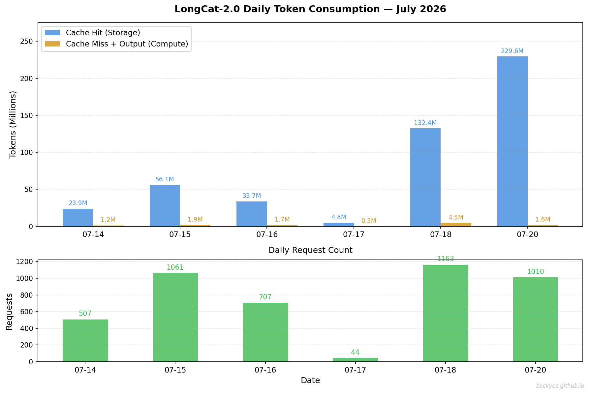

A number that changed how I think about AI inference
This July, my team was running a multi-turn Agent session on LongCat-2.0 — a long-running research assistant that maintained context across hundreds of turns and accumulated millions of tokens of dialogue history. After a few weeks of continuous operation, I downloaded the usage data from LongCat Platform, and one chart stopped me cold.
LongCat-2.0 Daily Token Consumption — July 2026

Look at July 20 alone: 229.6 million cache hit tokens consumed in a single day. Over the entire tracking period (July 14–20), the total reached 480.4 million cache hit tokens — with only 11.3 million actual compute tokens (cache miss + output). The ratio: 42.7 storage tokens for every 1 compute token.
This is not an anomaly. This is the new reality of long-context AI. And it fundamentally changes which resource dominates your bill.
99.1% of tokens in a long-context Agent session are "remembered," not "computed."
The Scenario: Real Data from 480 Million Cache Hit Tokens
Here's the actual consumption profile from the LongCat-2.0 Agent session (July 14–20, 2026):
| Metric | Value | What It Means |
|---|---|---|
| Cache Hit Tokens (storage) | 480.4M | KV-Cache reads: historical context reused |
| Cache Miss Tokens (compute) | 7.8M | New tokens requiring actual computation |
| Output Tokens | 3.5M | Model-generated responses |
| Total Compute (Miss + Output) | 11.3M | Actual FLOP-bound computation |
| Storage:Compute Ratio | 42.7:1 | Each compute token "serves" 42.7 cached tokens |
| Peak Single Day | Jul 20: 229.6M cache hits | Maximum daily storage consumption |
The context window reached a steady state of 200K–450K tokens [^contextwindow] — every request carried this full history. And the vast majority of the "work" was simply keeping that history available in memory, not computing new things.
[^contextwindow]: Context window steady state is determined by the Agent architecture: system prompt (5-10K) + tool definitions (10-30K) + accumulated dialogue history (100K-300K) + working memory (50K-100K). See Lil'Log - Context Engineering for a detailed breakdown.
The Receipt: What Different Vendors Actually Charge
I calculated the bill using official pricing from major providers. The differences are staggering.
| Provider | Cache Hit /M | Cache Miss /M | Output /M | Source |
|---|---|---|---|---|
| DeepSeek Pro (V4) | $0.003625 | $0.435 | $0.87 | Official Pricing |
| Kimi K3 | ¥2.00 (~$0.28) | ¥20.00 (~$2.78) | ¥100.00 (~$13.90) | Moonshot Pricing |
Exchange rate: $1 ≈ ¥7.2. Cache hit rates valid as of 2026-07.
DeepSeek Pro charges 77× less per cache hit than Kimi. This isn't a temporary promotion — it reflects a structural cost advantage in KV-Cache storage (via MLA compression).
Kimi's cache miss ($2.78/M) and output ($13.90/M) are also 6× and 16× higher than DeepSeek's ($0.435/M and $0.87/M).
Daily Breakdown: Storage vs Compute Cost

Using the daily consumption data, here's what each vendor would charge per day. Storage cost = cache hits × hit price. Compute cost = (cache misses + output) × respective price.
Pricing: DeepSeek storage $0.003625/M, miss $0.435/M, output $0.87/M · Kimi storage $0.28/M, miss $2.78/M, output $13.90/M
| Date | Hit (M) | Miss (M) | Out (M) | DeepSeek Storage | DeepSeek Compute | Kimi Storage | Kimi Compute |
|---|---|---|---|---|---|---|---|
| Jul 14 | 23.9 | 1.02 | 0.185 | $0.09 = 23.9×0.003625 | $0.60 = 1.02×0.435 + 0.185×0.87 | $6.70 = 23.9×0.28 | $2.55 = 1.02×2.78 + 0.185×13.9 |
| Jul 15 | 56.1 | 1.50 | 0.416 | $0.20 = 56.1×0.003625 | $1.01 = 1.50×0.435 + 0.416×0.87 | $15.72 = 56.1×0.28 | $7.30 = 1.50×2.78 + 0.416×13.9 |
| Jul 16 | 33.7 | 1.40 | 0.351 | $0.12 = 33.7×0.003625 | $0.91 = 1.40×0.435 + 0.351×0.87 | $9.45 = 33.7×0.28 | $6.13 = 1.40×2.78 + 0.351×13.9 |
| Jul 17 | 4.8 | 0.227 | 0.029 | $0.02 = 4.8×0.003625 | $0.12 = 0.227×0.435 + 0.029×0.87 | $1.34 = 4.8×0.28 | $0.74 = 0.227×2.78 + 0.029×13.9 |
| Jul 18 | 132.4 | 3.71 | 0.779 | $0.48 = 132.4×0.003625 | $2.29 = 3.71×0.435 + 0.779×0.87 | $37.11 = 132.4×0.28 | $16.87 = 3.71×2.78 + 0.779×13.9 |
| Jul 20 | 229.6 | 1.24 | 0.403 | $0.83 = 229.6×0.003625 | $0.89 = 1.24×0.435 + 0.403×0.87 | $64.34 = 229.6×0.28 | $6.13 = 1.24×2.78 + 0.403×13.9 |
| Total | 480.4 | 7.8 | 3.5 | $1.74 | $6.45 | $134.51 | $70.33 |
On July 20 (peak day): DeepSeek $1.72 (storage $0.83 + compute $0.89) vs Kimi $70.47 (storage $64.34 + compute $6.13) — a 41× difference.
Total Bill: DeepSeek vs Kimi
For the identical 480M+ token workload:
| Provider | Storage Cost | Compute Cost | Total | Storage % |
|---|---|---|---|---|
| DeepSeek Pro (V4) | $1.74 | $6.45 | $8.19 | 21.2% |
| Kimi K3 | $134.51 | $70.33 | $204.84 | 65.7% |
Calculation details:
DeepSeek:
- Storage: 480.4M × $0.003625 = $1.74
- Compute (miss): 7.8M × $0.435 = $3.40
- Compute (output): 3.5M × $0.87 = $3.05
- Compute subtotal: $6.45
- Total: $8.19
Kimi:
- Storage: 480.4M × $0.28 = $134.51
- Compute (miss): 7.8M × $2.78 = $21.68
- Compute (output): 3.5M × $13.90 = $48.65
- Compute subtotal: $70.33
- Total: $204.84
For the exact same token consumption, Kimi costs 25.0× more than DeepSeek. The gap comes from both storage pricing (77×) and compute pricing (6–16×).
What the Data Tells Us
From our measured 480M cache hit tokens (one Agent session, one week):
1. Storage dominates Kimi's bill (78%) but not DeepSeek's (25%).
- DeepSeek: $1.74 storage / $8.19 total = 21.2%
- Kimi: $134.51 storage / $204.84 total = 65.7%
- DeepSeek's $0.003625/M hit price makes storage nearly free; Kimi's $0.28/M makes it the dominant cost
2. For identical workload, Kimi costs 25.0× more.
- DeepSeek total: $8.19 ($1.74 storage + $6.45 compute)
- Kimi total: $204.84 ($134.51 storage + $70.33 compute)
- Ratio: $204.84 / $8.19 = 25.0×
3. The price gap has two sources:
- Storage: Kimi $0.28/M vs DeepSeek $0.003625/M = 77×
- Compute miss: Kimi $2.78/M vs DeepSeek $0.435/M = 6.4×
- Compute output: Kimi $13.90/M vs DeepSeek $0.87/M = 16.0×
The cost structure is not theoretical — it's measured from 7 days of real Agent usage.
Summary
One week, one Agent session, 480M cache hit tokens:
| Vendor | Storage | Compute | Total | Storage % |
|---|---|---|---|---|
| DeepSeek Pro (V4) | $1.74 | $6.45 | $8.19 | 21.2% |
| Kimi K3 | $134.51 | $70.33 | $204.84 | 65.7% |
At scale (projection):
| Context | DeepSeek | Kimi | Ratio |
|---|---|---|---|
| 100M | $2.11 | $42.70 | 20.2× |
| 480M (ours) | $8.19 | $204.84 | 25.0× |
| 1B | $17.11 | $426.80 | 24.9× |
- The longer the context, the wider the gap
References
1. DeepSeek API Pricing — Official DeepSeek Pro (V4) pricing: $0.003625/M cache hit
2. Moonshot AI (Kimi) Pricing — Kimi K3 official pricing
3. DeepSeek-V4 Technical Report — MLA architecture
4. Lil'Log - Context Engineering — Context window composition
5. Anthropic - Building Effective Agents — Multi-turn Agent patterns
Based on real-world Agent consumption data (480M+ cache hit tokens, context window 200K–450K tokens). Rate cards current as of 2026-07-20. All calculations reproducible — see data tables and references above.